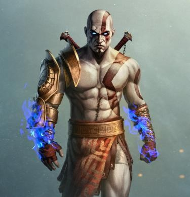
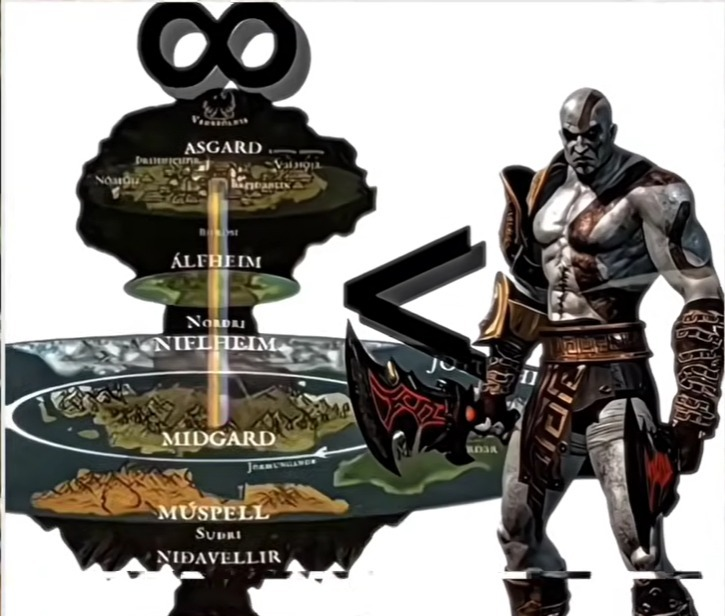

All Pantheon Hax Absorbed (Zeus, Hades, Poseidon, Hermes, Helios, Hercules, Athena, Sisters of Fate). Created with 48 Discord members & Jack.


Yandaki şemada açıkça görüldüğü gibi, Yggdrasil Dünya Ağacı dokuz ayrı makrokozmik diyarı ve sonsuz uzay-zaman sürekliliklerini birbirine bağlar[cite: 6].
Bu simülatördeki tüm wiki taramaları, God of War düşman hax'leri (Zeus, Hades, Hercules vb.) ve tanrısal yetenekler Discord sunucumuzda 48 kişinin ortak katılımıyla Kratos'un envanterine işlenmiştir.
Yönetmen Cory Barlog'un resmi açıklamalarına göre Kratos'un saf kas gücünün sınırı yoktur[cite: 4, 5].
Kratos seride yendiği her tanrının ve patronun hax yeteneğini ele geçirmiştir: **Zeus'un yıldırım otoritesi**, **Hades'in ruh sökme gücü**, **Poseidon'un deniz dalgası kontrolü**, **Hercules'in Nemean darbe gücü**, **Helios'un kör edici ışığı**, **Hermes'in hız çalma yeteneği** ve **Sisters of Fate'in zaman bükme hakimiyeti** doğrudan Godly Possessions envanterine işlenmiştir[cite: 4, 5].
Sisters of Fate katledilerek Acausality Type 5 kazanılmış, Claws of Hades ile rakibin özü sökülürken Blade of Olympus ile evrensel konseptler mühürlenmektedir[cite: 4, 5].
Rakip kim olursa olsun (ister anime evrenlerinden bir tanrı, ister kendi evrenindeki Zeus veya Hercules), Kratos tüm bu düşmanların hax yeteneklerini kendi pasiflerine eklediği için mutlak üstünlükle (Low/Neg Diff) kazanır[cite: 4, 5].